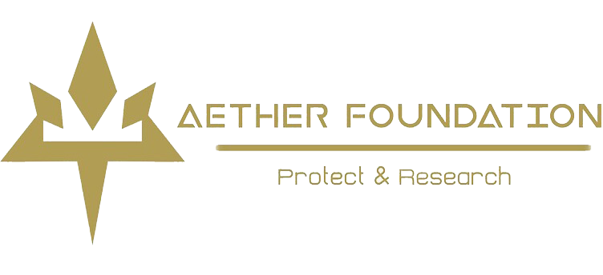

 Paraíso Æther
Paraíso Æther
El Paraíso Æther es una gran estructura flotante situada en el centro de la región de Alola. Es la base principal de la Fundación Æther, el hogar de Samina, nuestra jefa, y de su familia. Además, se la considera la quinta isla de Alola debido a su influencia tanto en seguridad como en tecnología.
El nombre de esta isla proviene (al igual que el de la propia fundación) de la palabra latina para el éter, una sustancia hipotética que en la alquimia se creía el quinto y más divino elemento de la naturaleza, que ocupaba el vacío y el espacio. Esto representa a la isla artificial como un espacio perfecto, bucólico y aséptico para los Pokémon, separado de los demás elementos de la naturaleza que conforman el variado ecosistema de Alola.
Los miembros de la Fundación Æther usan trajes blancos con detalles dorados, incluyendo los directores y la misma presidenta de la fundación. Los empleados llevan trajes blancos, pero su uniforme varía dependiendo de la clase de empleado que sean. Generalmente, se trata de un mono lleno de botones dorados que cubre todo el cuerpo, cuenta con dos bolsillos en cada cadera, guantes blancos y una gorra. Los trajes llevan un pequeño pin dorado con el logo de la organización en el cuello.
El principal objetivo de la organización es cuidar y proteger a todos los Pokémon de la región. Se encargan de hacer prevalecer el ecosistema de Alola y proteger las especies que se encuentran en peligro de extinción, como los Corsola, que peligran por ser una buena presa de Mareanie. La fundación cuenta con varios miembros distribuidos por la región en Bases Æther, realizando patrullas para vigilar cada lugar y llevar a los Pokémon heridos al Paraíso Æther o curarlos de manera urgente en la base. Cuando encuentran un Pokémon herido, lo llevan al Paraíso Æther, donde es cuidado durante un tiempo en la reserva hasta que se cura y puede ser devuelto a la libertad en su hábitat natural.